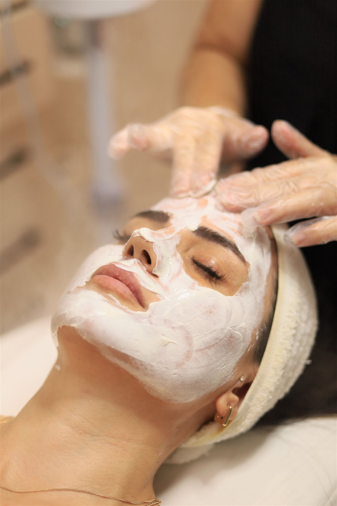
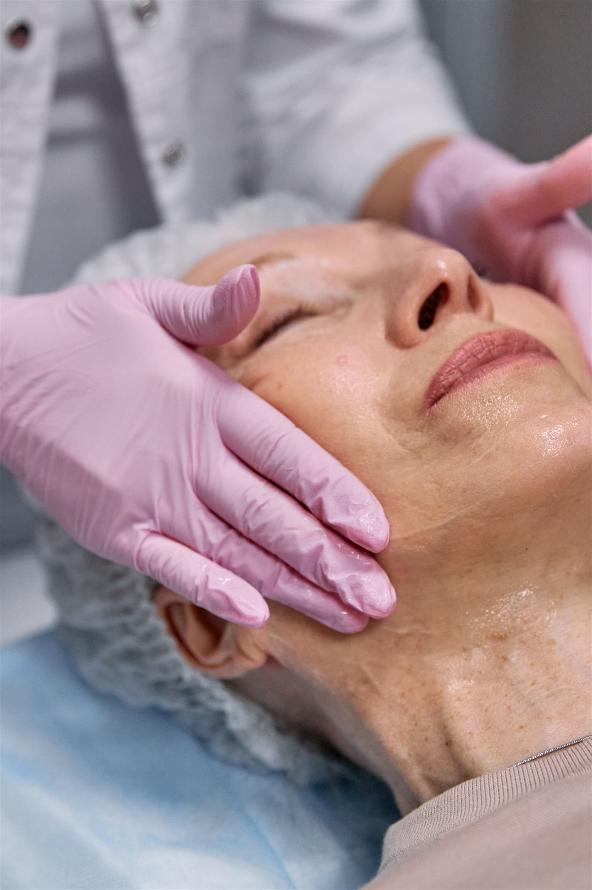

Anti-akné kezelések
Célzott gondoskodás a problémás bőrnek, segítséggel az otthoni rutin kialakításához. A 14–19 éveseknek szóló Tini Anti-Akné csomagot lentebb találod.
Megnézem a csomagotSzemélyre szabott gondoskodás
A bőröd egyedi, ezért a kezeléseidnek is annak kell lenniük. Legyen szó hidratálásról, feszesítésről vagy aknékezelésről, a bőröd aktuális állapotából indulok ki.

Hidratálás és bőrmegújulás
Értékes növényi összetevők, célzott aktív hatóanyagok és bőrbarát formulák. A megfelelő kezelést a bőröd állapota alapján választjuk ki.
Erről a kezelésről érdeklődöm
Figyelem az érett bőr igényeire
A kozmetikai peptidekre épülő kezeléseket a bőröd igényeihez igazítom. Választhatsz arckezelést, vagy kiterjeszthetjük a gondoskodást a nyak és a dekoltázs területére is.
Erről a kezelésről érdeklődömMinden kezelés személyre szabott. Az első találkozáskor felmérem a bőröd állapotát, és segítek kiválasztani a megfelelő eljárást.
Célzott gondoskodás a problémás bőrnek, segítséggel az otthoni rutin kialakításához. A 14–19 éveseknek szóló Tini Anti-Akné csomagot lentebb találod.
Megnézem a csomagotA kezelési terv részeként választható eljárás. A lehetőségeket a bőröd állapotának felmérése után beszéljük át.
ÉrdeklődömBőrfiatalító kezelési lehetőség a személyre szabott terv részeként.
ÉrdeklődömA megfelelő eljárást a bőröd igényeihez igazítva, személyes egyeztetés alapján választjuk ki.
ÉrdeklődömA cél a bőröd hosszú távú egészségének és természetes szépségének támogatása. A kezelési tervet mindig hozzád igazítom.
Ha az 5 alkalmas kúra után nem vagy elégedett, a kúra díjának 50%-át visszakapod.
Komplex gondoskodás
Egy jól felépített kezeléssorozatban lépésről lépésre foglalkozunk a bőröd igényeivel. A választásban személyesen is segítek.
79 000 Ft
Feszesebb, simább, üdébb bőr, kíméletes bőrfiatalítással.
99 000 Ft
Intenzív, személyre szabott gondoskodás az érett bőr igényeire.
59 000 Ft
Célzott támogatás a problémás bőrnek, 14–19 éveseknek.
Korábbi rossz tapasztalatok miatt sokáig nem mertem kozmetikushoz járni, de ez az itt töltött első alkalmat követően megváltozott. A bőröm minden kezelés után szinte ragyog, remekül érzem magam, és Eliza segítségével sikerült kialakítanom a helyes, bőrtípusomnak megfelelő arcápolási rutint. Szívből ajánlom!
Eliza nagyon kedves, csupaszív kozmetikus, a kozmetika csodaszép, tiszta, hangulatos, mindig örömmel járok ide vissza. Legutóbb a 10 alkalmas arcfiatalító kezelést vettem igénybe, és az eredmény magáért beszél, azóta több pozitív visszajelzést is kaptam ismerőseimtől. Csak ajánlani tudom Elizát!
Tudhatod, mire számíts, már az első találkozás előtt.
Írj az űrlapon vagy hívj fel. Hétfőtől péntekig, 9:00 és 16:00 között, előzetes egyeztetéssel várlak.
Megismerem a bőröd állapotát, az arcápolási szokásaidat és az eddig használt termékeidet.
A személyes terved alapján végzem a kezelést, amelyet relaxáló arcmasszázs egészít ki.
Praktikus tanácsokkal és személyre szabott termékajánlásokkal segítem a mindennapi bőrápolást.
Kérdésed van, vagy időpontot szeretnél egyeztetni? Keress bizalommal, és segítek megtalálni a számodra megfelelő kezelést.